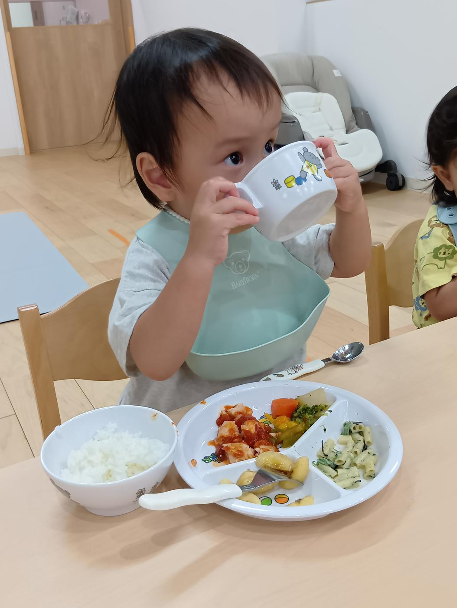
POINT 1
さいたま市の認可保育園
国の基準（職員の配置や設備、運営の内容など）を満たし、さいたま市の認可を受けた保育園です。入園金はかかりません。
0歳から2歳までの大切な時期に、一人ひとりの生活リズムや発達、気持ちを丁寧に受け止めます。
定員12名、さいたま市の認可を受けた博滇会グループの保育園です。
見学のご相談は、お電話またはフォームからどうぞ。
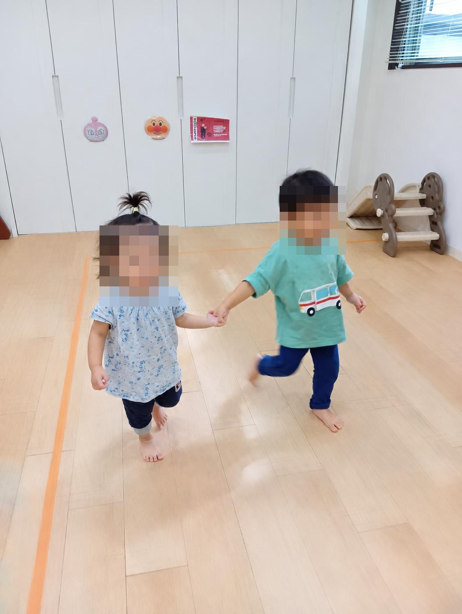
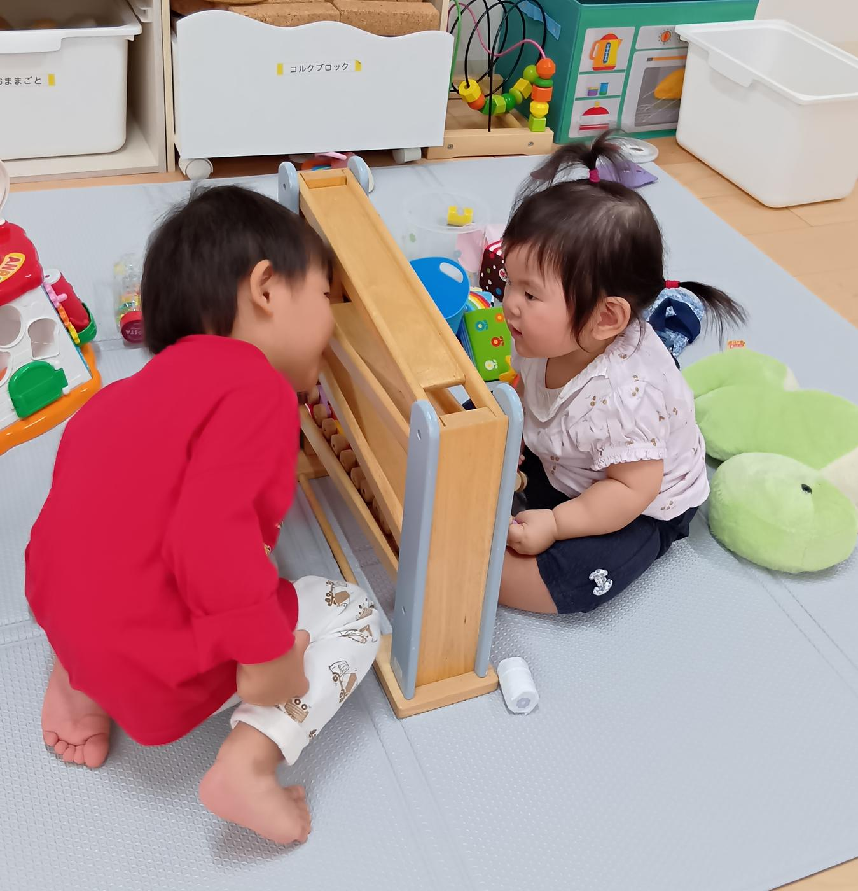
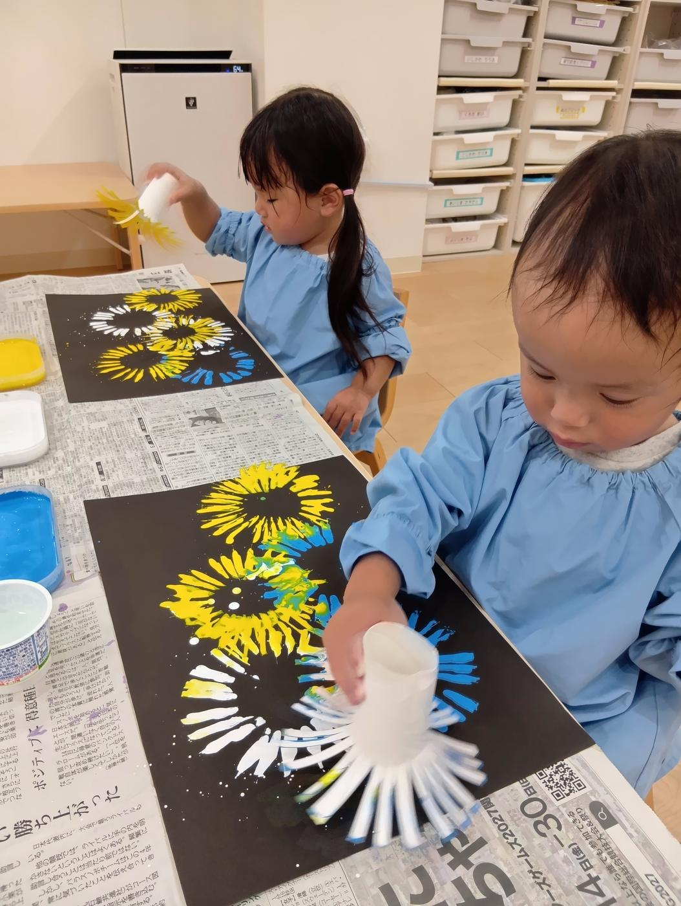
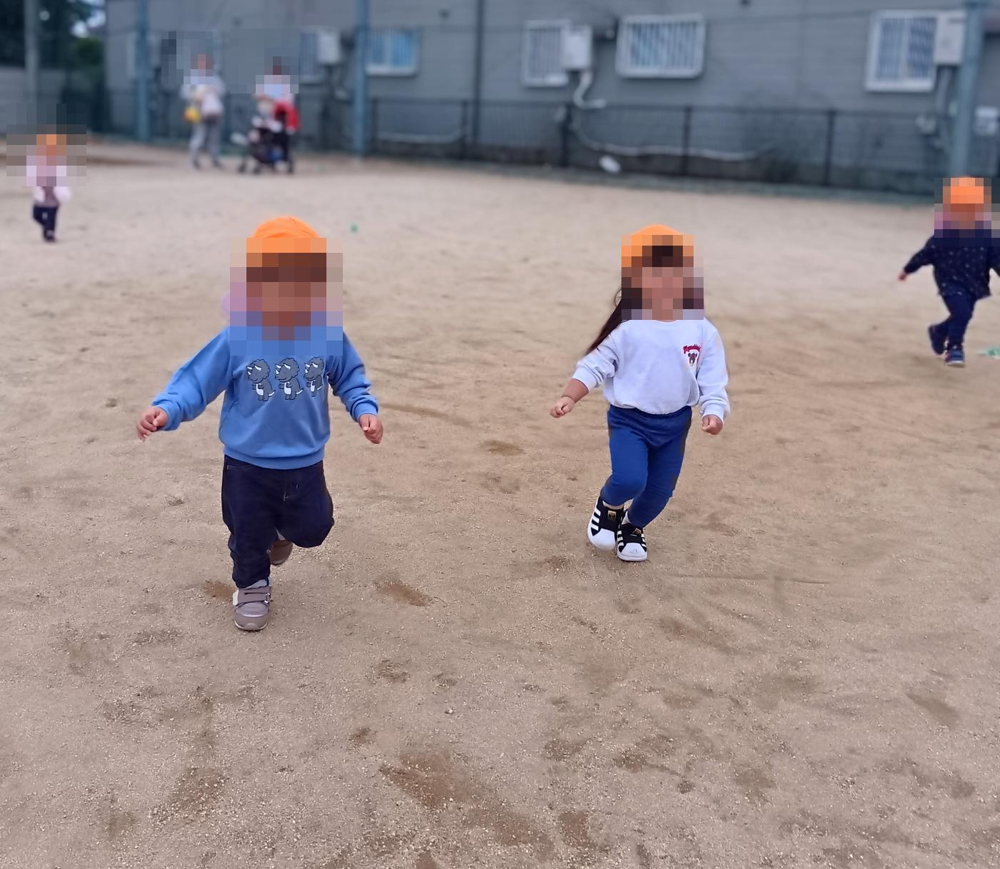
0歳から2歳までの大切な乳幼児期に、一人ひとりの生活リズムや発達、気持ちを丁寧に受け止めます。子どもにとって安心できる居場所であると同時に、保護者が安心して働き、子育てと仕事を両立できる、身近で頼れる保育園を目指します。
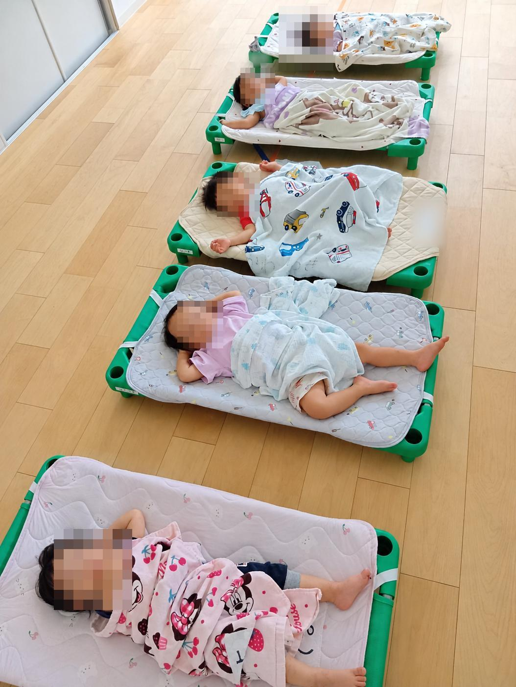
定員12名の小さな園だからこそ、一人ひとりの生活リズムや発達、その日の気持ちに目が届きます。ゆっくり、丁寧に受け止めながら、毎日を一緒に過ごします。
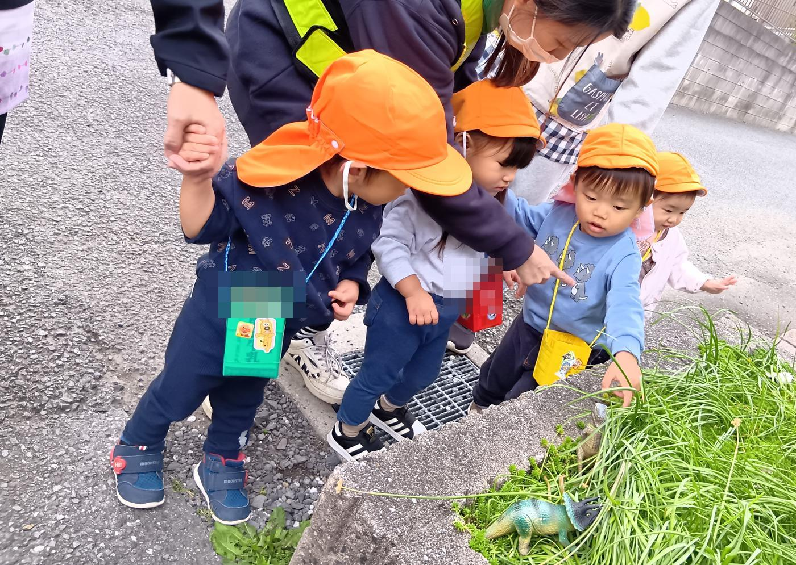
月曜から土曜まで7:15から開所しています。月曜から金曜は、19:15まで延長保育ができます（満1歳から）。保護者のみなさまが安心して働き、子育てと仕事を両立できるよう支えます。
小さな園だからこそできる、安心の毎日をお届けします。

国の基準（職員の配置や設備、運営の内容など）を満たし、さいたま市の認可を受けた保育園です。入園金はかかりません。
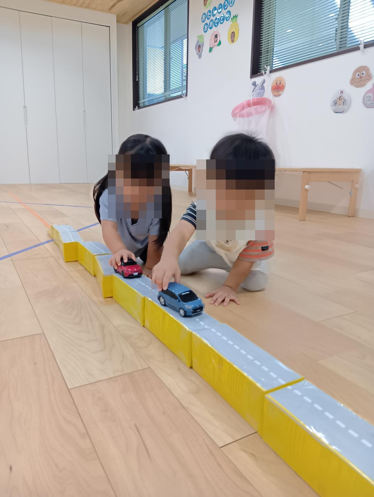
生後6か月から2歳までのお子さまだけの、小さな保育園です。少人数なので、一人ひとりに目が届きます。
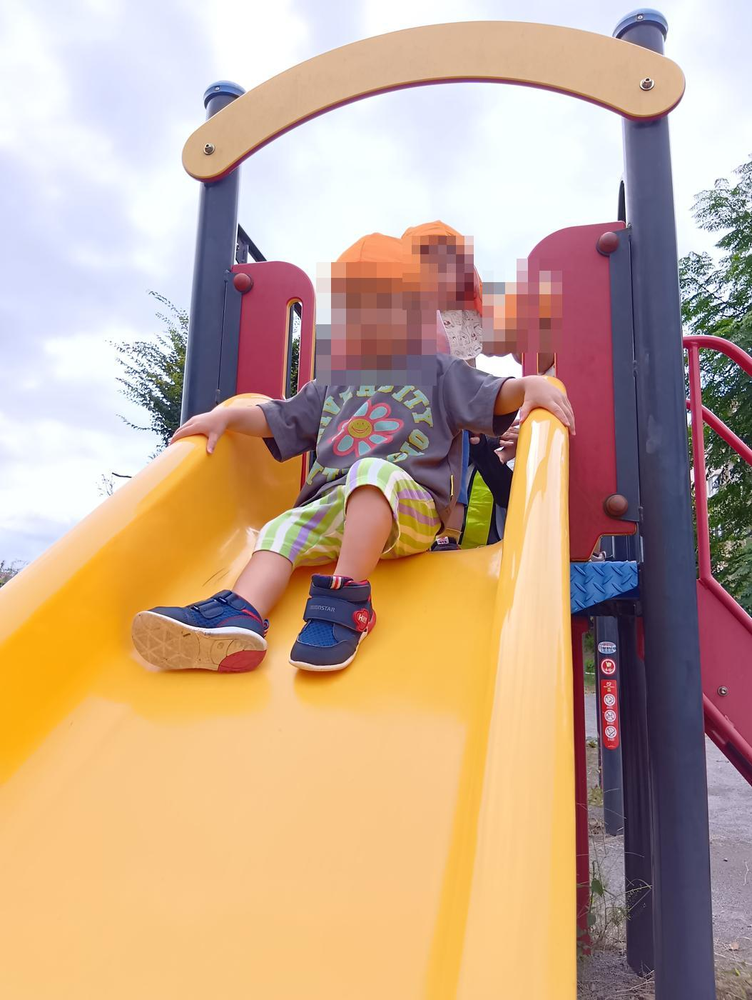
月曜日から土曜日まで、7:15から開園しています。月曜日から金曜日は、お仕事の都合に合わせて19:15まで延長可能です（満1歳から）。（土曜日は18:15まで）
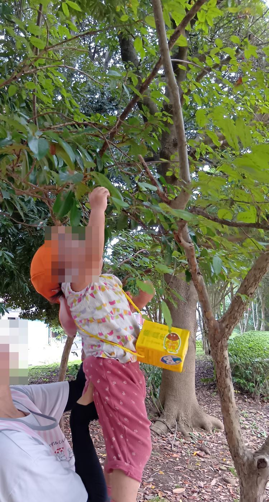
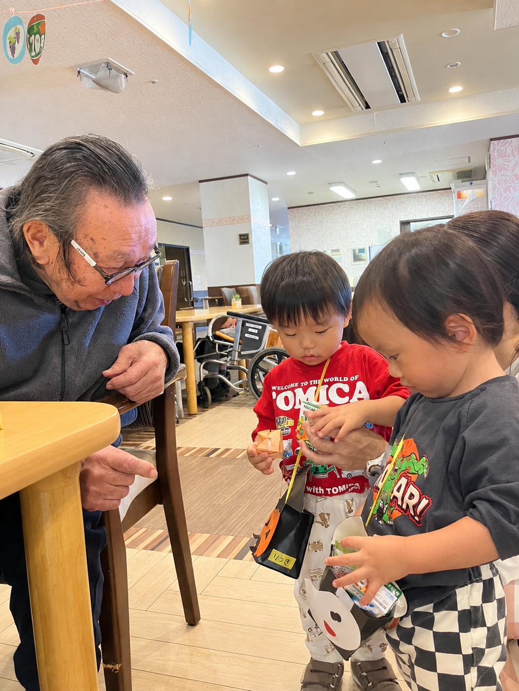
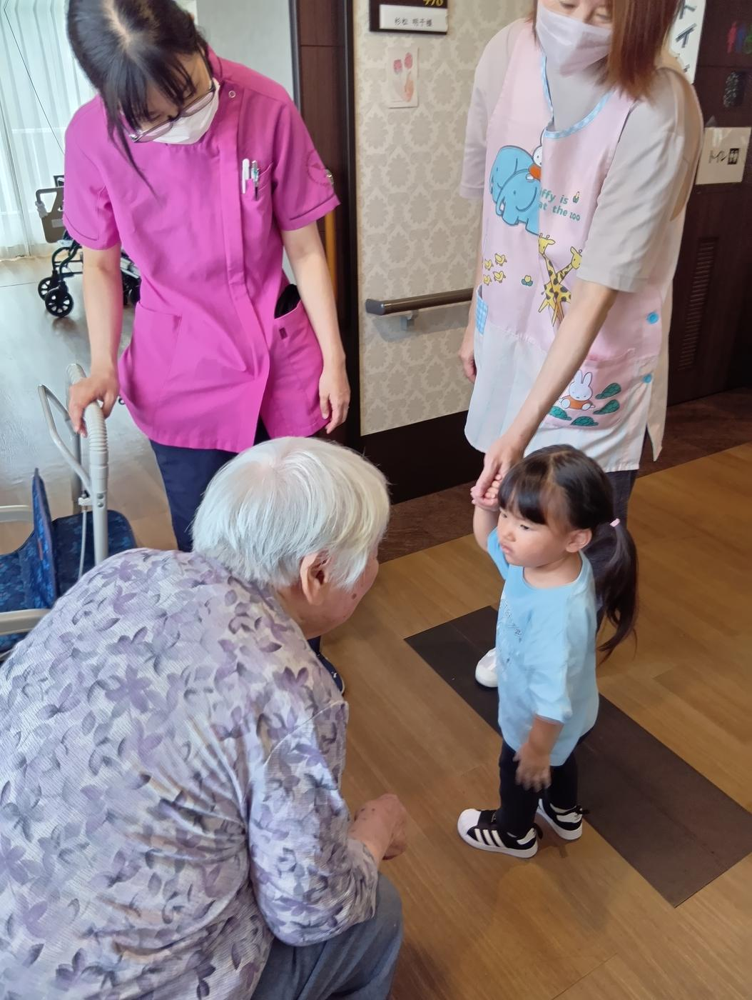
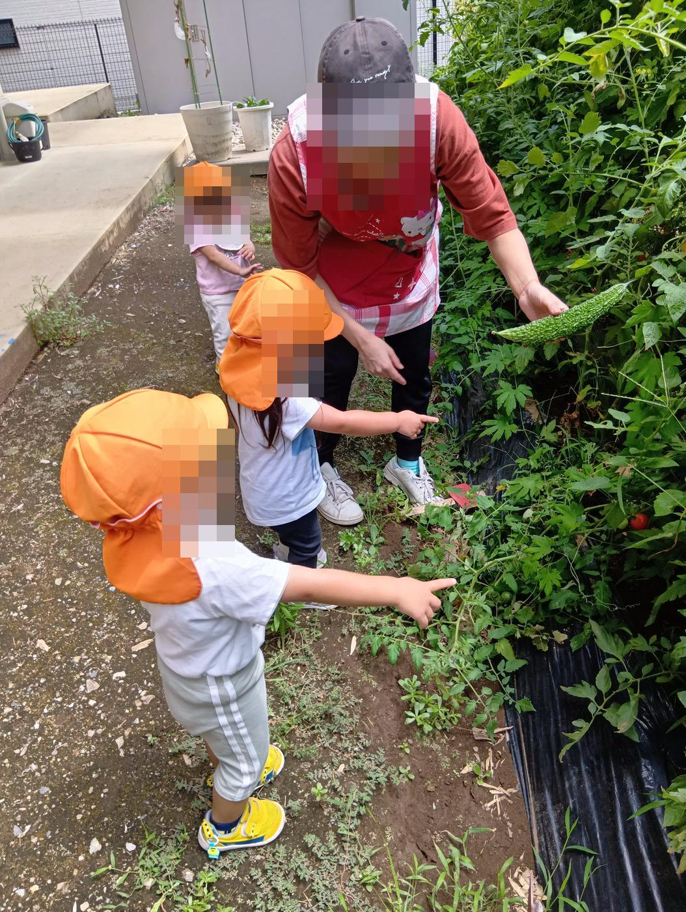
見学やご入園のこと、空き状況のことなど、お気軽にお問い合わせください。
保育時間：月〜金 7:15〜18:15（延長保育は19:15まで）／土 7:15〜18:15（延長保育なし）
日曜・祝日・年末年始はお休み